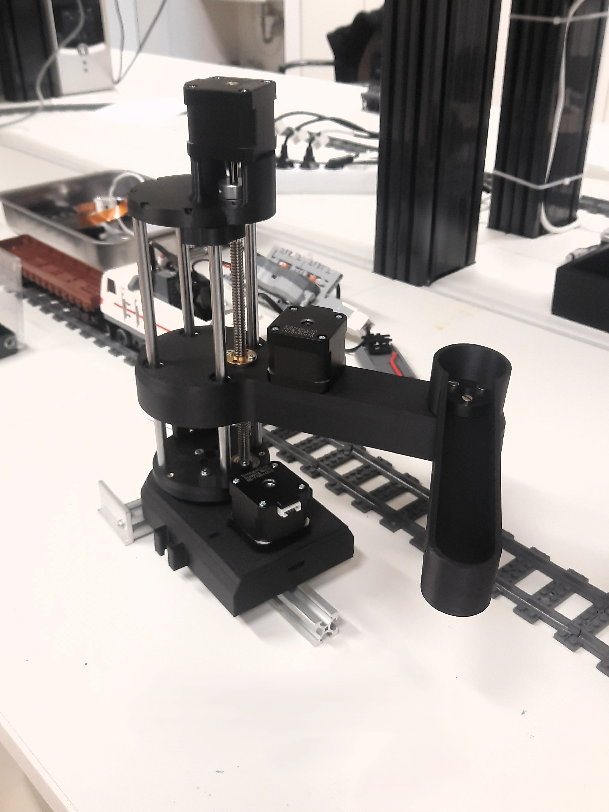

SCARA Robot.
3DOF SCARA Robot

Challange.
Developing a 3DOF SCARA robot requires precise kinematics and structural rigidity. The main challenge was managing vibration at high speeds while maintaining a low-cost profile using 3D-printed components.
Solution.
I implemented an Inverse Kinematics algorithm in Python to control the stepper motors smoothly, achieving a repeatability of ±0.5mm through reinforced joint designs.